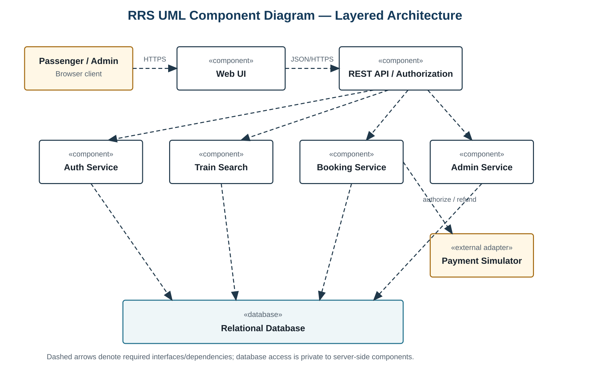
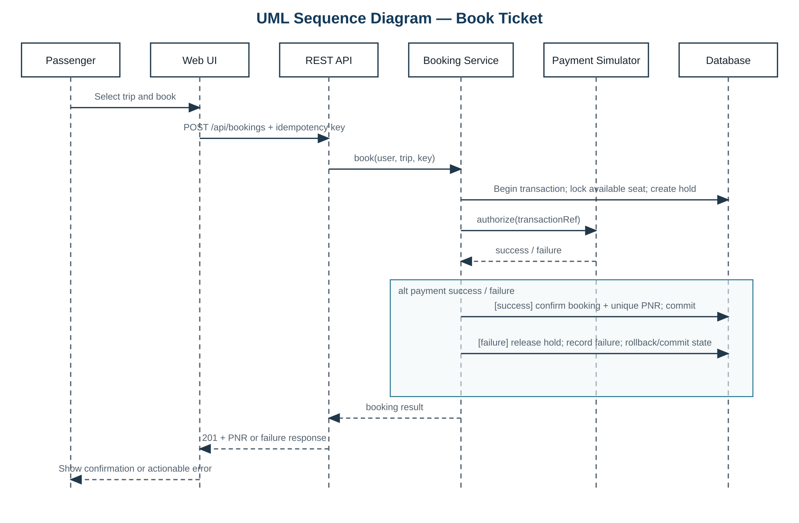
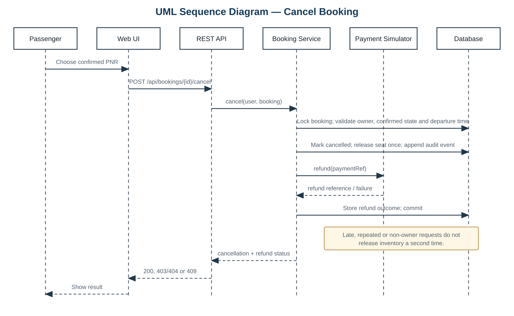

1. Introduction and Design Goals
This document defines the architecture and detailed design for the Railway Reservation System described by the SRS. The design uses a browser client, REST API, domain services, relational database and deterministic payment simulator.
1.1 Design Goals
- Preserve one confirmed booking for one successful idempotent request.
- Prevent double allocation and negative seat availability under concurrency.
- Enforce role and booking ownership on the server, independent of the UI.
- Keep security-sensitive operations auditable without recording secrets.
- Separate presentation, API, domain and persistence responsibilities.
1.2 Scope and Constraints
The design covers the Part 1 prototype and simulated payment/refund behavior. It does not define a production payment gateway, live railway integration or wait-list allocation. All components must preserve the requirement identifiers defined in the SRS.
2. Architecture
2.1 Architectural Pattern
A layered client–server pattern separates the Web UI, REST API/authorization boundary, domain services and persistence. The browser never accesses the database directly. Domain services own business state transitions. The payment simulator is isolated behind an adapter so it can later be replaced without changing passenger workflows.
2.2 Component View and Descriptions

| Component | Responsibilities | Primary requirements |
|---|---|---|
| Web UI | Collect inputs, expose accessible controls, display state and validation, call only the REST API. | NFR-05–06 |
| REST API / Authorization | Authenticate requests, validate payloads, enforce roles and ownership, route to domain services, assign request IDs. | FR-02, SEC-01, SEC-03 |
| Auth Service | Registration, adaptive password hashing, credential verification, session expiry and lockout. | FR-01–02, SEC-02–04 |
| Train Search | Match route/date filters, order departures and calculate valid availability. | FR-03–04, NFR-01 |
| Booking Service | Seat holds, idempotent confirmation, PNR generation, cancellation, refund status and booking audit. | FR-05–07, FR-09, NFR-02–04 |
| Admin Service | Create, edit and disable trips/capacity and append administrative audit events. | FR-08–09 |
| Payment Simulator | Return deterministic authorization/refund outcomes and references for testing. | FR-05, FR-07 |
| Relational Database | Persist state; enforce unique email/PNR/idempotency/seat allocation and transactional integrity. | FR-01, FR-04–09, NFR-03–04 |
2.3 Data and Deployment View
| Entity | Key fields and constraints |
|---|---|
| User | id, email, password_hash, role; unique normalized email; no plaintext password field. |
| Trip | id, train_number, origin, destination, departure_utc, arrival_utc, fare, capacity, enabled. |
| Seat | id, trip_id, seat_number; unique (trip_id, seat_number). |
| Booking | id, pnr, user_id, trip_id, seat_id, status, idempotency_key; unique PNR, unique confirmed seat, unique caller/idempotency key. |
| PaymentEvent | id, booking_id, kind, status, reference; contains no payment credentials. |
| AuditEvent | id, actor_id, action, outcome, created_utc, request_id; append-only at the application boundary. |
The Web UI is served to current browsers. API/domain services and the database run in separate processes. Database network access is private to server-side services. HTTPS terminates at the trusted application edge, and authenticated traffic remains protected across any internal hop.
2.4 Security Architecture
- Identity: salted adaptive password hashes; generic authentication errors; account lockout after the defined threshold.
- Authorization: the API and domain layer both verify actor, role and resource ownership.
- Sessions: HTTPS-only authenticated traffic, inactivity expiry and server-side invalidation on sign-out.
- Data protection: parameterized database operations, private database access and no secrets in errors or audit payloads.
- Auditability: actor, action, timestamp, request ID and outcome are recorded for defined events; submitted passwords and tokens are excluded.
- Concurrency: transaction locks plus uniqueness constraints prevent two confirmed bookings for the same seat.
2.5 Architecture Traceability
| Requirements | Design realization |
|---|---|
| FR-01–02; SEC-02–04 | Auth Service, API security boundary and AuditEvent. |
| FR-03–04; NFR-01 | Train Search, indexed trip data and calculated availability. |
| FR-05–07; NFR-02–04 | Booking Service, Payment Simulator and transactional database constraints. |
| FR-08 | API role checks and Admin Service. |
| FR-09 | Auth, Booking and Admin services append AuditEvent records. |
| SEC-01 | API plus domain-layer role/ownership checks. |
| NFR-05–06 | Accessible responsive Web UI. |
3. Detailed Design
3.1 Booking Sequence

The service obtains or returns the existing idempotent result, locks one available seat and creates a temporary hold. It calls the simulator with a transaction reference. Success confirms the booking and PNR in the same controlled workflow; failure releases the hold and creates no confirmed booking.
3.2 Cancellation Sequence

A confirmed booking moves to cancelled once. Late, repeated and non-owner requests do not change inventory. Refund failure remains visible as a payment-event outcome without restoring the cancelled booking.
3.3 API Design
| Method and resource | Success | Principal failures |
|---|---|---|
POST /api/register | 201 account created | 400 validation; 409 duplicate |
POST /api/sessions | 200 session | 401 invalid; 429 locked |
DELETE /api/sessions/current | 204 | 401 unauthenticated |
GET /api/trips?origin=&destination=&date= | 200 ordered trips | 400 invalid query |
GET /api/trips/{id}/availability | 200 availability | 404 missing |
POST /api/bookings + Idempotency-Key | 201 PNR/seat/status | 402 simulated payment failure; 409 unavailable |
GET /api/bookings | 200 caller-owned records | 401 unauthenticated |
POST /api/bookings/{id}/cancel | 200 cancellation/refund status | 403/404 non-owner; 409 late/ineligible |
POST /api/admin/trips | 201 | 403 non-admin; 409 conflict |
PATCH /api/admin/trips/{id} | 200 | 403; 404; 409 |
DELETE /api/admin/trips/{id} | 204 disable | 403; 404 |
GET /api/admin/audit | 200 events | 403 non-admin |
Request and response bodies are JSON. Dates use ISO 8601 with an explicit UTC offset. Mutating operations attach a request ID to their audit event.
3.4 Error Handling and State Rules
Errors use {"code":"...","message":"...","requestId":"..."}. Validation uses 400, unauthenticated 401, forbidden 403, missing 404, state conflict 409, lockout 429 and unexpected failure 500. Responses never contain passwords, tokens, SQL or stack traces.
| State rule | Enforcement |
|---|---|
| Booking: pending → confirmed or failed | Transaction-controlled; failed cannot become confirmed without a new request. |
| Booking: confirmed → cancelled | Owner, state and departure checks; no transition back to confirmed. |
| Seat allocation | Lock plus database uniqueness; transaction rollback prevents partial allocation. |
| Duplicate request | Caller/idempotency-key uniqueness returns the stored outcome. |
3.5 Design Verification
TC-04, TC-05 and TC-08 verify booking transactions, idempotency and concurrency. TC-06 verifies ownership, eligibility, cancellation idempotency and booking audit. TC-07 verifies administrator separation and audit. TC-09 verifies session and restart behavior. Database constraints and endpoint contracts are reviewed against their mapped SRS identifiers before implementation.
4. References and Change Control
References: Team E15 RRS SRS v1.1; IEEE 1016:2009 software design description guidance; ISO/IEC/IEEE 29119-3:2021 test documentation guidance.
Any change to an FR, NFR or SEC identifier requires review of component mapping, API contracts, state invariants, security controls and test coverage.